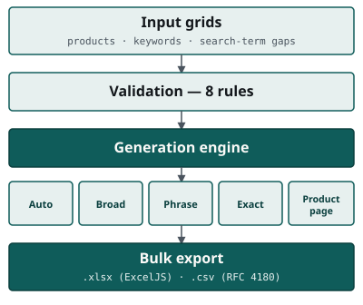
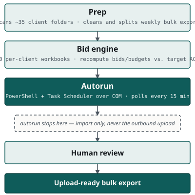
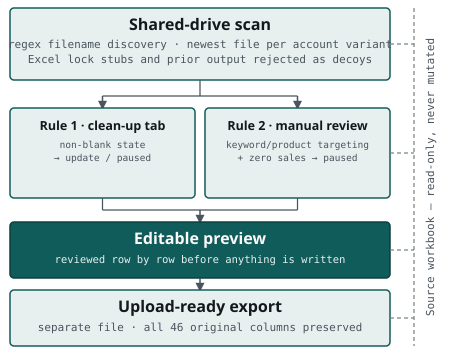
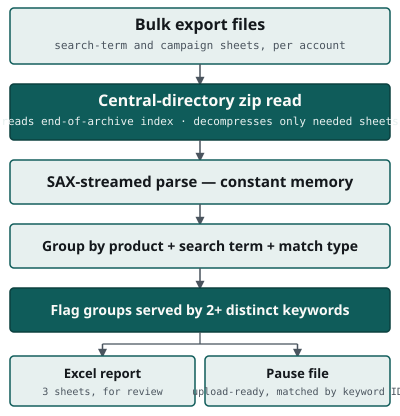
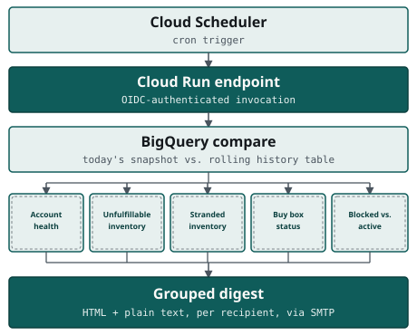

Automation & Data Systems Specialist
I build the internal tooling that a data-driven operation runs its weekly cycle on
Sole engineer for an internal tooling stack — desktop apps, scheduled automation, AI-assisted development with Claude, and BI dashboards and reporting pipelines built on BigQuery, Power BI, SQL Server, and MS Access. Eight years in data and reporting before that. Based in the Philippines (UTC+8), with working hours that overlap US mornings.
- 8+ years in data & reporting
- 801 automated tests across five shipped tools
- 3 production desktop apps shipped
Work
Automation tooling, shipped and in daily use
-

Replacing a 211,000-line Excel macro with a tested campaign generator
A Windows desktop app that turns a spreadsheet of products and keywords into upload-ready Amazon Sponsored Products bulk files — a tested reimplementation of a legacy VBA workbook.
-

Automating a 38-workbook weekly bid cycle without a single bad upload
Scheduled VBA and PowerShell automation that runs the weekly Sponsored Products and Sponsored Display bid-optimisation cycle across a fleet of client workbooks.
-

Automating a weekly pause pass across 38 client accounts without ever touching the source file
A Windows desktop app that applies two precise rule sets to every account's prep workbook and writes upload-ready pause files, without mutating the source it reads from.
-

Finding where an advertiser bids against themselves — and fixing a zip reader that could hang forever doing it
A desktop tool that detects Sponsored Products keyword cannibalisation, built around a hand-written zip reader that sidesteps a silent infinite-hang defect in standard xlsx readers.
-

Catching catalog problems automatically instead of stumbling into them
A scheduled Cloud Run and BigQuery service that diffs today's catalog state against a rolling history and emails a grouped digest of what actually changed — piloted on a single seller account.
Services
Beyond the case studies above
-
Report & pipeline automation
Recurring spreadsheet and reporting work replaced with scheduled, tested pipelines that run without someone remembering to click a button.
-
Data warehousing
BigQuery warehouses that give scattered source data a single, queryable home instead of a folder of exports.
-
Dashboards & BI
Looker Studio and spreadsheet-based dashboards built on top of a warehouse, not a weekly copy-paste.
-
Excel & Google Sheets tooling
VBA and Apps Script templates and reporting systems that turn a recurring manual assembly job into a button — built on the same skillset behind the VBA and macro engineering in the case studies above, applied to reporting and spreadsheet workflows directly.
-
Data cleanup & reconciliation
Messy, inconsistent, or duplicated source data reconciled into something a report or pipeline can trust.
-
Internal tools & Amazon Ads tooling
Purpose-built desktop apps and cloud services for workflows spreadsheets and off-the-shelf software don't cover.
Stack
What I build with
Warehousing & query
Automation
Desktop apps
Reporting & BI
About
Eight years in data and reporting, mostly inside BPO operations, before moving into building the systems that generate the reports rather than producing them by hand — the same shift that runs through every project on this site.
I now run automation and data systems for a digital agency as a one-person function: building and operating desktop apps, scheduled automation, BI dashboards and reporting pipelines (BigQuery, Power BI, SQL Server, MS Access), and AI-assisted development with Claude — turning recurring manual work into tested, scheduled systems.
Contact
Get in touch
Open to automation, data systems, and AI-assisted tooling work — spreadsheet-scale or systems-scale.